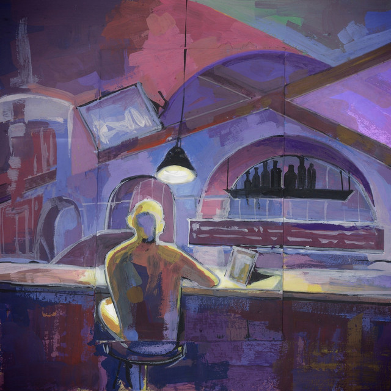

Личное дело
Имя: Кирилл
Ник: Pasters
Возраст: 13
Локация: Ульяновск, Россия
Биография
Обычный человек из Ульяновска, ранее снимал контент про Windows, на данный момент состоит в 3LES League и снимает на статерскую тематику.

дети немой страны
конец солнечных дней
🔊
Лучшие друзья
Reloster
Online
Познакомились в 2021, общались в комментариях, на данный момент хорошие друзья.
Quvinor
Offline
Особо не помню нашу историю, максимум помню что познакомились в том же 2021, и втроем с релостером хорошо ладили.
Memunasik
Away
Нас познакомил Quvinor.
Конфиг ПК
- Процессор: Intel Core i5-13400
- Видеокарта: NVidia GeForce RTX 3060
- Память ОЗУ: 32GB DDR4
- Мат. плата: Asus Prime B760M-A WiFi D4
- SSD: Samsung SSD 980 1TB